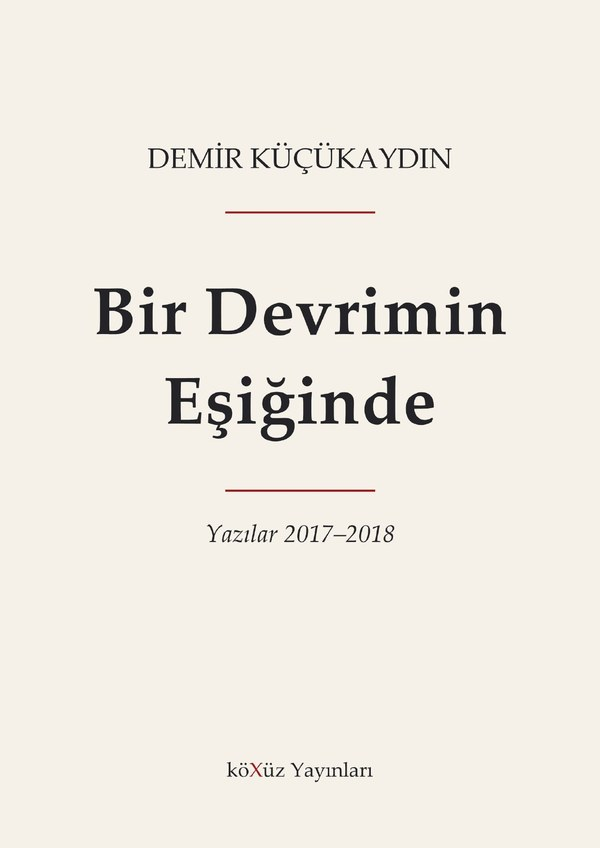

Bir Devrimin Eşiğinde
Yazılar 2017–2018 · köXüz Yayınları
Ücretsizdir; üyelik gerekmez.
Kitap hakkında
Kasım 2017 – Ocak 2018 arasında yazılan “Bir Devrimin Eşiğinde” yazı dizisinin derlemesi. Dizi, yapay zekâ ve robotların üretimin her alanına girişiyle şekillenen dünya ölçüsündeki devrimi ele alıyor ve bu devrimi anlamak için insanın ve toplumun ne olduğu sorusuna, insan oluş sürecinde emeğin, ateşin ve aletlerin yerine, Engels’in ve Kıvılcımlı’nın yanılgılarına, zorunluluklar ve özgürlükler âlemi kavramlarına uzanıyor.
Kitap ayrıca iki kısım içeriyor: Yuval Noah Harari’nin Sapiens’inin eleştirisi ve Bitcoin’in ekonomi politiği.
Kaynak gösterme
Küçükaydın, D. (2026). Bir Devrimin Eşiğinde: Yazılar 2017–2018. köXüz Yayınları. Zenodo. https://doi.org/10.5281/zenodo.23349955
Kitabın kalıcı arşiv kaydı Zenodo’dadır: Zenodo sayfasına git